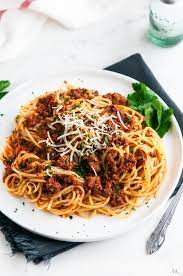

SPAGHETTI

Description
Whether you're looking for a spaghetti sauce with meatballs for your next spaghetti night, a meatball sub, or any other Italian recipe, you have just found the best recipe on the internet. This simple recipe shows you how to make homemade meatballs with a delicious and fresh tomato sauce.
We promise you will never go back to store-bought meatballs or spaghetti sauce ever again! We recommend getting a big pot ready because you'll want to double (or triple) this recipe.
Ingredients
Meatballs:
- 1 pound lean ground beef
- 1 cup fresh bread crumbs
- 1 tablespoon dried parsley
- 1 tablespoon grated Parmesan cheese
- ¼ teaspoon ground black pepper
- ⅛ teaspoon garlic powder
- 1 egg, beaten
Sauce:
- ¾ cup chopped onion
- 5 cloves garlic, minced
- ¼ cup olive oil
- 2 (28 ounce) cans whole peeled tomatoes
- 2 teaspoons salt
- 1 teaspoon white sugar
- 1 bay leaf
- 1 (6 ounce) can tomato paste
- ¾ teaspoon dried basil
- ½ teaspoon ground black pepper
Steps
- Make the meat sauce
- Cook the noodles
- Make the ricotta mixture
- Layer the lasagna according to the recipe instructions
- Cover with foil and bake
- Let the lasagna rest before serving
Return to the home page